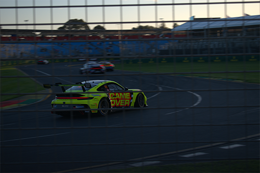
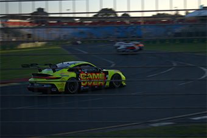
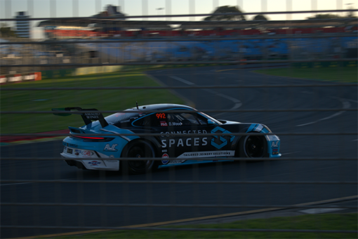
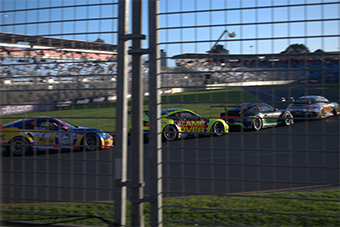
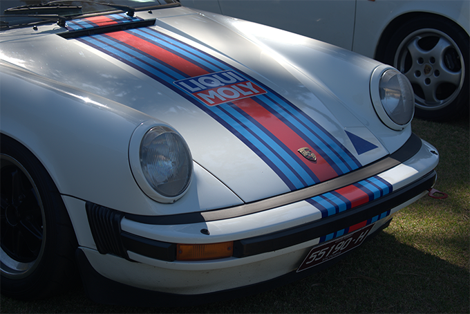
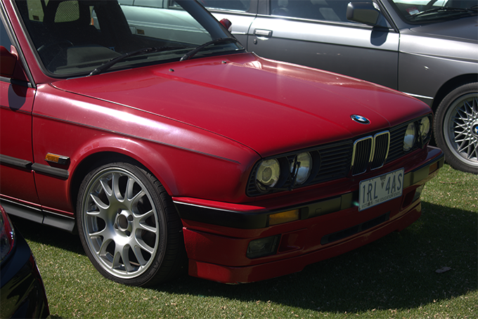

Motorsport/Cars
I love cars and motorsport so I take quite a lot of photos when I am at car/motorsport events, but sometimes it may be difficult to get the perfect shot, with the speed of the cars, things in the way, and other factors all making it harder to get that perfect shot, sometimes just a few setting tweaks can make the difference.
Tips and tricks shooting fast motorsport
Shooting fast moving cars can be very difficult, and can sometimes be made even more hard when you are standing behind a barrier, like a fence, or a mesh boundry. As these barriers are essential for saftey, most motorsport events will have you facing these issues, so it is important to make sure your settings are all good and right so as to get the perfect results.
 


Shutter speed is key to getting a good result when shooting fast moving objects. Try keep your shutter speed nice and high in order to get the nice motion blur on the background.
Shoot in burst mode, in order to make sure you get plenty of photos all in the few seconds the car is passing you, you should use burst mode on your camera, this means that instead of just taking a single image when the button is pressed, the camera takes a lot of images or a 'burst' this makes it very easy to get lots of photos.
Choose the right location. Choosing the right location is key, as it not only makes it easier to take the photos, but can also improve the quality of your images in the process. Choosing to stand at a courner or a chicane, where the cars will be slowing down, is a great idea to improve not just your photos but the overall experience of taking photos of cars.
Panning shots are yet another way to improve the outcome of your images and make sure that you get that nice blur in the background of your subject as it passes you. Simply hold you camera up, and track the car as it passes you while holding the sutter button to get a nice clean panning shot.
But most of all, have patience, your not gonna get the perfect shot the first time, practice and practice, and you will get better and better.
Shooting still cars
Shooting stills of cars is a bit more simpler then when they are hurtling around a track at 200+ kmh. Shooting still cars is more about making little changes in order to bring the overall quality of your image up, things like experimenting with the angle, and light, different angles can make nice points of interest in your image and can work out well, and look very nice.

